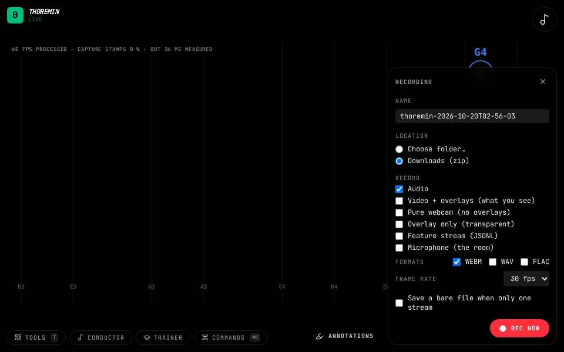

Record

What to do
- Press Record at the bottom right.
- Choose which streams to capture, then Rec now.
- Press Stop: the take is written as one folder (or a zip).
Capture what you play. Choose any of five streams: the audio you hear, the video with the overlays, the raw camera, the overlays alone on transparency (Chrome and Edge, experimental), and every feature value as a file.
Where it goes
A take is one folder with every stream and a manifest that says where each stream starts on a shared clock, so audio, video and features line up. By default a take downloads as a zip. In Chrome and Edge, pick a folder once (the sheet's Location, or the Trainer's Save takes to a folder...) and every later take is written straight into it.